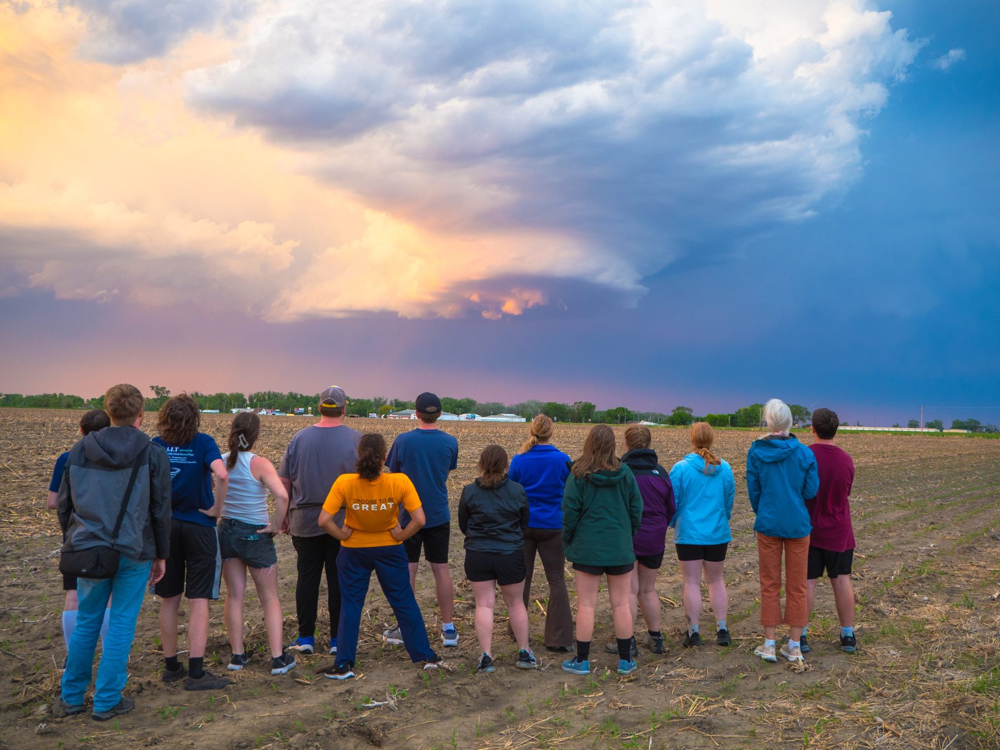
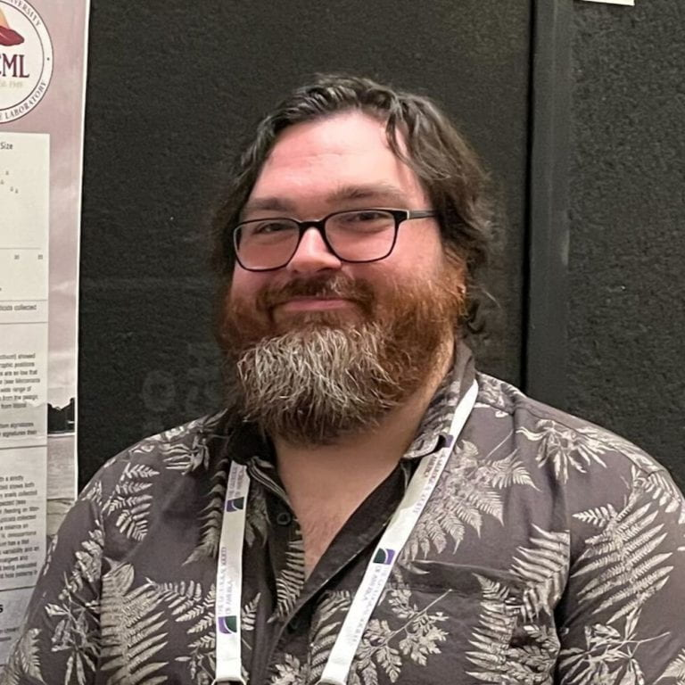
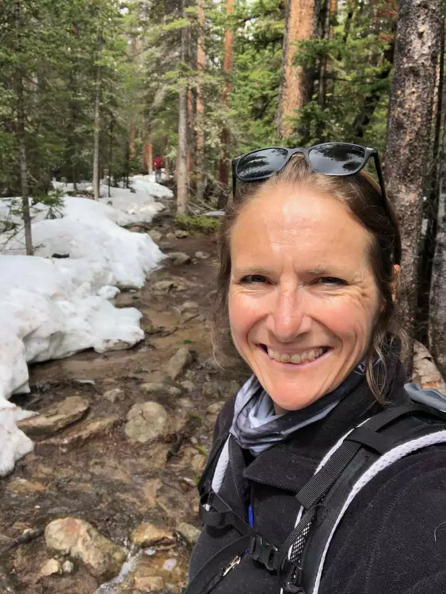
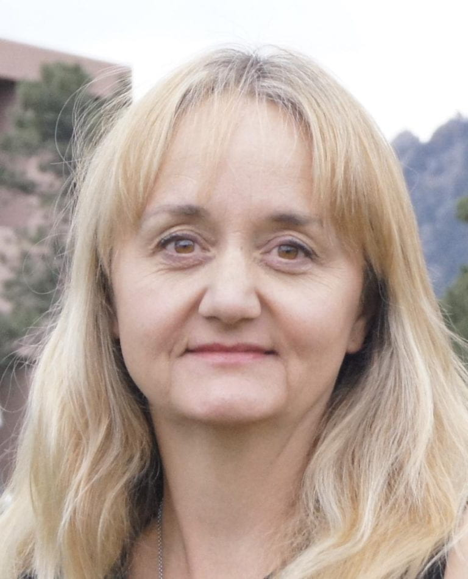
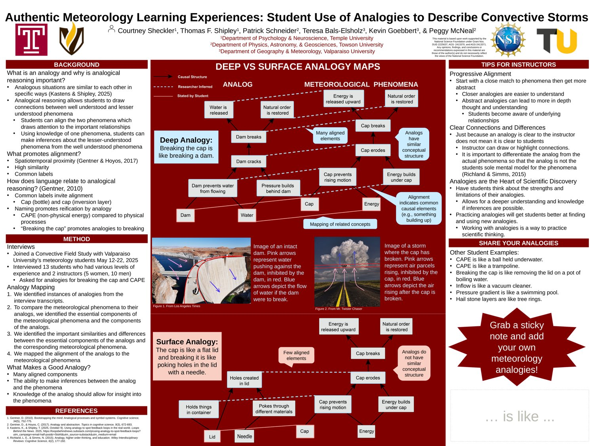
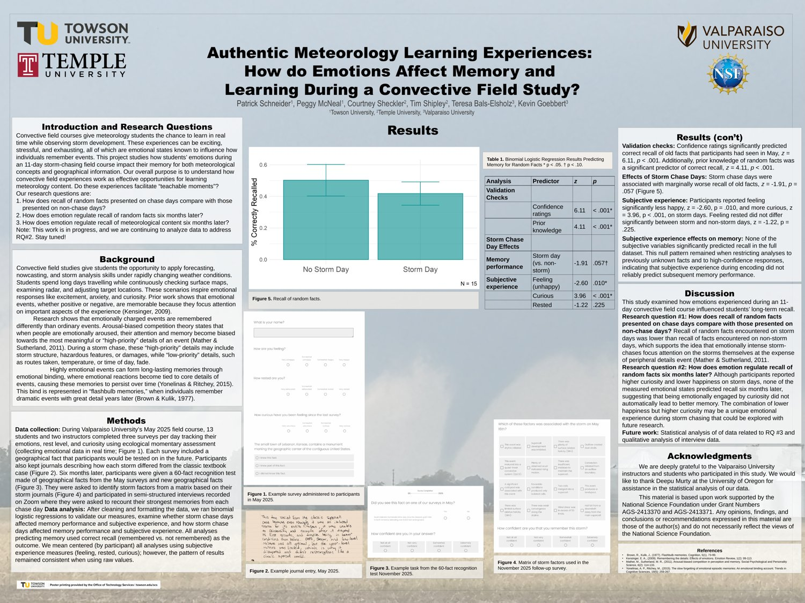

Research Projects › Cognition in the Wild
What cognitive processes support reasoning about complex atmospheric phenomena — including the prediction of extreme weather — and how do experts pass those skills to students?
There is currently no theoretical basis for understanding this kind of reasoning, nor a complete account of how experts transfer it to students. The project takes an unusual approach: embedding researchers in 11-day convective field studies. These field studies immerse students in authentic atmospheric processes within a rich learning environment, mentored by experienced atmospheric scientists. The interactive setting offers a rare chance to observe expert and student practice, ask questions, and conduct interviews.
This early-stage research matters for atmospheric science, cognitive science, and education because it seeks to understand how atmospheric scientists reason about real atmospheric processes and how they share that expertise with students. By examining how experts convey deep aspects of their thinking and how students take it up, the project lays groundwork for future investigations that will inform both the cognitive and natural sciences and guide evidence-informed atmospheric science education.

Approach
The project is interdisciplinary by design. It combines the expertise of Co-PI Dr. Thomas F. Shipley, a cognitive scientist, with that of Co-PI Dr. Peggy McNeal, a geoscience education researcher, and the knowledge of senior personnel and atmospheric scientists Dr. Teresa Bals-Elsholz and Dr. Kevin Goebbert.
An advisory board of experts meets regularly to steer the work. Jeffrey Zacks studies how representations in the brain and the world work together — how perception and cognition interact to process events — informing how we analyze data from experts and students. Cindy Shellito, a meteorology professor who teaches dynamic meteorology, brings a deep understanding of students' expected expertise at graduation. Rebecca Haacker, Director of NSF NCAR Education, Engagement and Early-Career Development, offers a large-scale view of the meteorology training pipeline and advises the project's overall direction. Including these experts reflects an intentional interdisciplinary and ecological approach (Resnick & Shipley 2013) that connects research to the practical aspects of learning and cognition.
Project Members





Project Posters
Recent posters presented at the American Meteorological Society (AMS) Annual Meeting, Houston, 2026.


Learn More